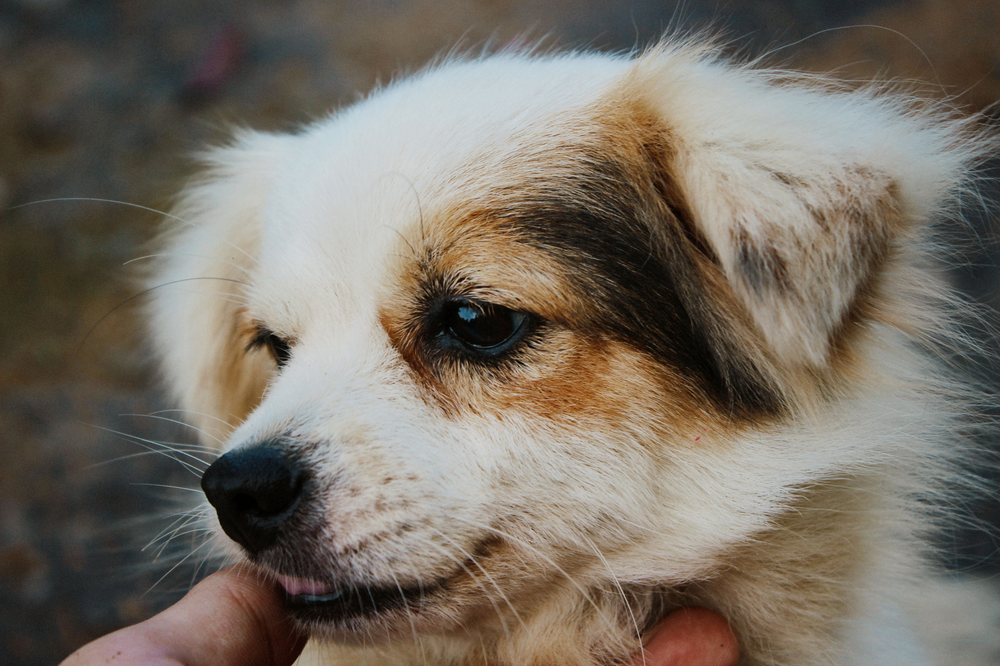

Helping Hawaii's Shelter Animals
The Hawaii Animal Shelter Dashboard shares simple overview of shelter needs, adoption trends, and community support opportunities across Hawaii.
Dashboard Overview
Animal Spotlight
Available Dogs for Adoption



Why This Matters
Understanding shelter needs helps community members make informed decisions about adopting, volunteering, fostering, and donating to animal welfare organizations thoughout Hawaii.